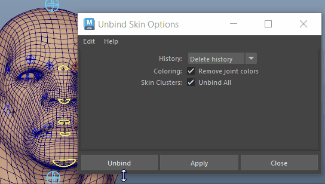

注： “取消绑定蒙皮”(Unbind Skin)会从选定几何体中移除所有蒙皮簇，即使具有多个蒙皮簇也是如此。
- 历史(History)
- 设定为“删除历史”(Delete History)、“保持历史”(Keep History)或“烘焙历史”(Bake History)。
-
- 删除历史(Delete History)
- 分离蒙皮，将其移动到原始的、未变形的形状，然后删除蒙皮的蒙皮簇节点。若要绑定重新开始的蒙皮，选择该选项（例如，由于大量编辑平滑蒙皮权重而导致意外的结果）。
- 这是默认选项。
- 保持历史(Keep History)
- 分离蒙皮，然后将其移动到原始的、未变形的形状。它不会删除蒙皮的蒙皮簇节点。再次绑定蒙皮时，使用该选项来保留平滑蒙皮权重。该选项非常有用，例如，如果当您分离平滑蒙皮并再次绑定该蒙皮后，决定将其他关节添加到骨架，但希望保留现有的平滑蒙皮权重。
- 烘焙历史(Bake History)
- 分离蒙皮并删除其蒙皮簇节点，但不会将蒙皮移动到其原始的、未变形的形状。分离后蒙皮将保持其当前形状。此选项非常有用，例如，如果您不会再使蒙皮的形状变形，并且希望减轻场景的处理需求。（例如，您可能使用蒙皮作为场景背景中的静态角色。）
- 上色(Coloring)
- （该选项仅适用于刚性蒙皮。）
- 指定在绑定期间是否要删除指定的关节颜色。单击“启用”或“禁用”。默认设置为启用。
- 蒙皮簇: 全部取消绑定(Skin Clusters: Unbind All)
-

- 默认情况下，此选项处于启用状态，用于取消绑定选定蒙皮上的所有蒙皮簇。
- 禁用此选项可显示与选定蒙皮关联的蒙皮簇列表，以便您可以选择要取消绑定的蒙皮簇。单击“取消绑定”(Unbind)。

在具有多个簇的几何体上取消绑定蒙皮簇
-
注： 如果从“历史”(History)菜单中选择“烘焙历史”(Bake History)，则“全部取消绑定”(Unbind All)复选框将禁用，且列表将消失：“烘焙历史”(Bake History)不支持烘焙各个蒙皮簇的历史。